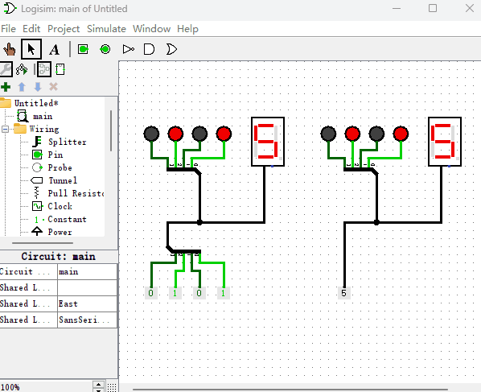

使用Logisim演示二进制数字
我们本来不是在讲Logisim软件中如何绘制电路图的么？为什么突然插入了一节“二进制数字”的章节呢？还记得上一章节我提到过“如果某个电子元件的输入端带电，我可能会说成该电子元件的输入端为1”么？比如，一个“发光二极管”被点亮，我们说它代表1，如果熄灭就代表0。那一排有亮有灭“发光二极管”呢？是不是可以表示成10101这种信息呢？当然可以！也就是说，有一排带电或不带电的导线，它们传输的不仅仅是电信号，而是可以当作有意义的二进制信息。最直观的，我们可以把这些二进制信息当作二进制数字。既然高低电平可以表示二进制数字了，我们来在Logisim软件中来演示下前一节中十进制数字和二进制数字之间的转换关系。如下图所示，我们绘制两个简单的电路图，用来演示“二进制转换十进制”和“十进制转换二进制”的原理。这里用到了一个新的辅助电子元件“十六进制数码管”，它会把“导线拆分器”合并后的黑色导线，从低到高位的每一位所代表的01值连接起来当作一个二进制数字，最终转换成十六进制数字显示出来。比如“导线拆分器”把4跟导线合并成一根黑色导线后，第1根是高电平，第2根是高电平，第3根是低电平，第4根是低电平，于是它们所代表的二进制数字就是0011，最终“十六进制数码管”显示的结果就是3，因为二进制的11等于十六进制的3。

同时这次使用的“常量发生器”也变成了多位，你仔细观察就会发现，“常量发生器”是直接连接在“导线拆分器”合并后的黑色导线，由于黑色导线是由4根导线组成，也就是4位，所以“常量发生器”的属性栏也要改成4位。“常量发生器”的属性栏里面的值最终会以二进制形式的值，对应到黑色导线中的每根导线上。比如“常量发生器”的值如果设置位0x5，那么它的二进制就等于0101，也就是说，黑色导线中的第1根和第3根为高电平，其它为低电平。后面章节中，你会看到绝大多数电子元件都支持多位的形式，这样电路图中可以减少很多不必要的导线和导线拆分器，进而使得电路图变得更加简洁。